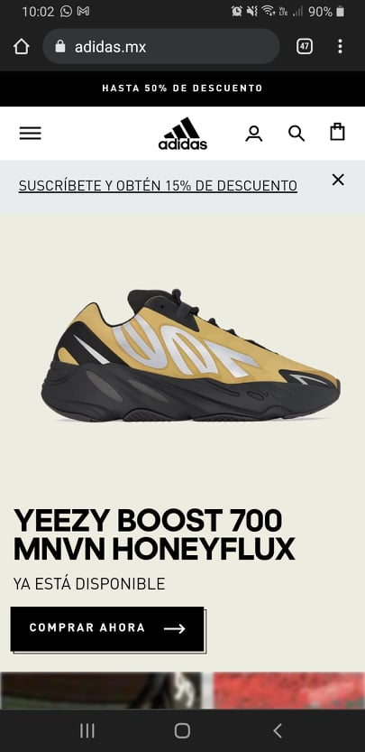

White space
Adidas In the Adidas screenshot we can see white space and clean design applied. Our focal point is the tennis shoes and all around it is a clean space that allow us to percibe better the shoe design. This helps to create a better experience for the user.
Visual Hierarchy
BirkenstockBirkenstock site is a good example of visual hierarchy, the image is the first thing we notice, after that we see the offer and then we are directed to the call to action button. These steps allow the user to reach the conversions on the site.
Proximity
H & MIn the H&M site I could notice how the proximity group together the elements from an specific item or message. For example, every offer or product have a description under the image or into it, near enough to help us recognize which item is describing.